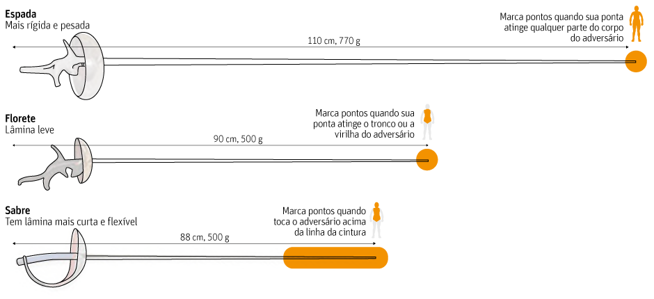

(2).png)
• Os combates são realizados em uma pista de 14 metros de comprimento com 1,5 a 2 metros de largura.
• Os esgrimistas são posicionados a uma distância de dois metros do adversários.
• O objetivo é tocar o adversário com a ponta da arma sem ser tocado.
• As disputas individuais têm três rounds de três minutos cada ou até um esgrimista tocar 15 vezes o adversário.
• Não é permitido contato corporal.
• Toques simultâneos não são contados.
• Na disputa por equipes, times de três competidores se enfrentam em nove séries de três minutos. Vence aquele que acumular mais pontos, ou atingir o adversário 45 vezes – justamente o triplo em relação ao individual.
• As armas
As armas utilizadas na esgrima são 3 e para cada uma delas existem regras e competições especificas.
↳ São permitidos toques em qualquer parte do corpo e o primeiro esgrimista a tocar marca ponto. Apenas os toques de ponta são válidos. O equipamento utilizado é o fato branco, ténis, mascara e espada. Não é utilizado colete, porque todos os toques são válidos.
↳ Exige uma maior precisão nos toques, pois apenas são válidos toques no tronco, excluindo os braços. O primeiro a atacar tem prioridade sobre o outro, obrigando-o a responder. A parte do florete que protege a mão é ligeiramente mais pequena, visto não serem válidos toques na mão. O colete utilizado é metálico, para distinguir a zona válida e não-válida.
↳ É uma arma que protege mais a mão, pois são válidos toques de ponta, e qualquer parte da lâmina, como gume e contra gume. O esgrimista apenas pontua se tocar no tronco, braços ou cabeça do adversário e tal como o florete, é uma arma convencional. Como os braços são um alvo possível não se usa um colete metálico, mas sim um casaco.
O esgrimista traja obrigatóriamente de branco.
↳ Em algodão ou kevlar. Fecho eclair, botões ou fitas; diferente para atirador direito ou esquerdo com botões ou fecho eclair do lado contrário. A parte do gilet que passa entre as pernas chama-se coxote. Usa-se calção branco do mesmo material e meias brancas e altas.
↳ De grade metálica em aço, babete protegendo o pescoço. Uma lingueta mantem-na sobre a cabeça. Atualmente a mascara foi desenhada com uma viseira transparente permitindo ver a cara do atirador.
↳ Na esgrima só se usa uma luva, esta usa-se na mão armada ficando a mão livre para cumprimentar (mesmo sendo a esquerda). O calçado tem que ser de muito boa qualidade, apesar de não haver tênis específicos. A razão para tal facto são as pistas onde se pratica, pois são metálicas e abrasivas, desgastando muito o calçado.
2021 ©